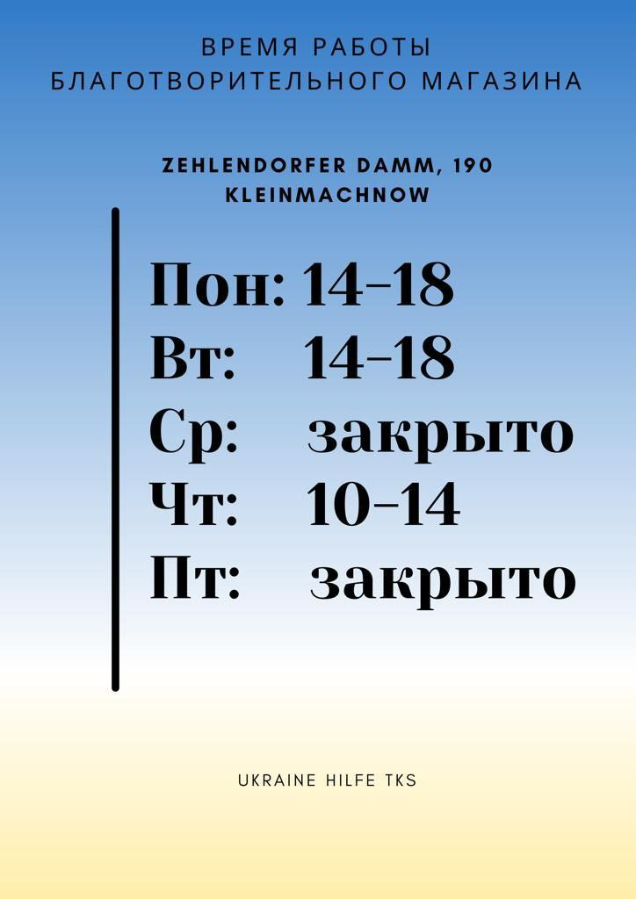

Этот сайт создан чтобы объединить информацию для украинцев, прибывающих в Potsdam-Mittelmark.
Этот сайт сделан на волонтёрских началах. Мы делимся той информацией, которой владеем сами, но никаких гарантий актуальности и достоверности дать, увы, не можем.
Вопросы можно задавать в нашем Телеграм-канале: https://t.me/teltow_ukraine.
Замечания по этому сайту, новую информацию или ваши предложения можно также присылать на minzastro@gmail.com
(Презентация с курса для волонтёров (на немецком))
https://www.teltow.de/aktuelles/news/ukraine-hilfe-ukrajina.html
На сегодняшний день земля Бранденбург не принимает новых беженцев (возможно исключение для близких родственников тех, кто уже здесь живёт).
Вопросами социальных выплат занимается Jobcenter (для пенсионеров - Sozialamt). Адрес: Lankeweg 4, 14513 Teltow
Часы работы:
Пн 8-13
Вт 8-13 / 14-18
Чт 8-13
Пт 8-13
https://handbookgermany.de/de/ukraine-info/de/wohnen.html
Где можно искать жильё для аренды:
https://www.immobilienscout24.de
Онлайн обучение: https://life.nv.ua/ukr/lifestyle/nimecka-vivchati-onlayn-bezkoshtovni-onlayn-kursi-nimeckoji-movi-vivchati-nimecku-bezkoshtovno-50226021.html
Безкоштовні онлайн-сервіси вивчення мов для українців
Багато мовних курсів стали безкоштовними для українців у період війни з рф. Нижче надаємо список на вибір. Важливо: під час реєстрації вказуйте українську як рідну мову, щоб отримати доступ.
Lingo Hut (понад 45 мов, 125 уроків вивчення корисної лексики без попередніх знань).
Polyglot (15 мов, відео, кожен курс містить 100 уроків).
Audiolang (основна частина матеріалів представлена у вигляді аудіофайлів, можна скачати або вивчати в режимі онлайн).
Drops (щоб отримати доступ до безкоштовної преміум підписки на рік,заповніть форму).
Busuu (дарує 90 днів преміум-підписки для вивчення всіх 12 доступних на сервісі мов).
DuoLingo (безкоштовний безстроковий доступ до англійської мови у додатку).
LingQ (відкрили преміум-аккаунт для українців, доступно 24 мови, для активації зверніться до служби підтримки).
UTalk (понад 100 мов, кожна складається з 60+ топіків,на вивчення однієї мови знадобиться близько 180 годин).
Ling App (більше 60 мов для вивчення, безкоштовне користування додатком для українців).
Preply (скасували комісію для українців та допомагають переселенцям знайти репетиторів-волонтерів з іноземної мови).
Mondly (більше 30 мов, безоплатний доступ до курсів для українців, які переїхали до європейських країн - під час реєстрації вказуйте українську як рідну мову для преміум-доступу).
Lingvø Studija (відео-уроки з вивчення чеської та словацької мови з українськими субтитрами).
Eduárd Baloga (відео-уроки з вивчення угорської мови з українським вчителем).
Miklós Magyar (фільми на ютубі в угорському перекладі).
Tutlo (онлайн-заняття з польської та англійської для дітей і дорослих. Уроки проходять у формі інтерактивних вебінарів із лекторами).
Obywatelki (курси польської мови для біженців з України різного віку, для реєстрації треба направити свої дані на мейл obywatelki@cjo.pl).
Goete Institut (безкоштовні відео-уроки для вивчення німецької мови).
Deutschtrainer (100 інтерактивних уроків за темами для вивчення німецьких слів, є українські пояснення).
Nicos Weg (уроки з вивчення німецької граматики, є українські пояснення).
Ausbildungsverbund Teltow = AVT предоставляют интеграционные курсы. Запись тут: https://www.avt-bildung.de/sprachkurs-anmelden Oderstraße 57, 14513 Teltow +49 3328 475120 info@avt-bildung.de
Ближайшие Volkshochschule (народные школы) ищут возможность открыть новые группы для изучения немецкого:
Kreisvolkshochschule PM https://www.kvhs-pm.de/
Volkshochschule Steglitz-Zehlendorf https://www.berlin.de/vhs/volkshochschulen/steglitz-zehlendorf/
Следите за новостями!
Дети в Германии обязаны посещать школы.
Дети 6-12 лет посещают начальные школы.
В Teltow имеет смысл обращаться в следующие организации:
Ernst-von-Stubenrauch-Grundschule, Egerstraße 10 14513 Teltow
MenschensKinder Teltow, Neißestraße 1 14513 Teltow - организация, занимающаяся всеми садиками и группами продлённого дня при школах.
Philantow Mehrgenerationenhaus/Familienzentrum, Mahlower Straße 139 14513 Teltow - семейный центр, тут всякие активности/кружки для детей и родителей. По вторникам и четвергам с 9 до 12 - кафе для детей и родителей.
Дети с 12 лет посещают общеобразовательные школы, их тут несколько типов. По вопросам школы для детей старше 12 лет обращайтесь к Евгений Strahler, это социальный работник в не государственной общественной организации Jugendmigrationsdienst. Он же занимается консульацией и сопровождением беженцов от 12 до 27 лет.
Kinder-cafe “Alte Schule” (старая школа) Zehlendorfer Damm 212, 14532 Kleinmachnow понедельник-пятница 10-16
Стоимость проезда на общественном транспорте в Берлине и Потсдаме зависит от того, через какие зоны проходит маршрут.
Транспортная сеть Берлина включает 3 зоны: Зона А – всё внутри кольца S-bahn (S41/S42), Зона В – приблизительно внутри административных границ Берлина и Зона С – покрывает ближайшие пригороды Берлина, включая (а юго-западе) Вердер, весь Потсдам, Кляйнмахнов, Стансдорф и Тельтов. Сайт Берлинской сети (<www.bvg.de>)
Транспортная сеть Потсдама также включает 3 зоны: Зона А – центр города, Зона В – приблизительно внутри административных границ Потсдама и Зона С – покрывает ближайшие пригороды Потсдама, включая Вердер, Кляйнмахнов, Стансдорф и Тельтов. Внимание в зону С Потсдама не входит Берлин, в том числе районы Целендорф, Лихтерфельде и станция S-bahn Wannsee. Сайт Потсдамской сети (<www.vbb.de>)
Тельтов-Стансдорф-Кляйнмахнов относятся к зоне С Потсдамской транспортной сети и к зоне С Берлинской транспортной сети. Это означает, что для проезда к центру Потсдама и в Вердер требуется билет Potsdam ABC, а к центру Берлина - Berlin ABC.
И для Берлина, и для Потсдама есть несколько видов билетов:
Kurzstrecke - билет для коротких поездок (до 4 остановок в Потсдаме / до 3 остановок на S- U-bahn или до 6 отсановок в Берлине).
Einzelfahrschein - Обычный билет. Есть варианты на 2 зоны (AB или BC) и на 3 зоны (АВС).
4-Fahrten-Karte - 4 билета, которые не обязательно использовать все сразу (главное - пробить перед посадкой), чуть дешевле, чем 4 Einzelfahrschein.
Есть также билеты на день (выгодно, если надо совершить за день 3 и более поездок), групповые билеты, билеты на велосипед…
Цены на билеты я тут не указываю, так как они могут поменяться уже в сентябре-октябре.
Для Тельтова, Кляйнмахнов, Стансдорф (ТКС) в автобусах regiobus Potsdam Mittelmark (от 600 до 699) есть отдельные билеты только по району ТКС, они дешевле.
Важно Те, кто получает пособие в Джобцентре, могут получить там Mobilitätsticket - это именная карточка, которая даёт 50% скидку на приобретение месячных абонементов по Потсдаму. На Берлин эти скидки не действуют.
Тафель в Потсдаме не ригистрирует новых клиентов!
У кого есть водительские права и кто хочет водить машину тут: у вас есть 6 месяцев от момента въезда, чтобы конвертировать украинские права в немецкие. По истечении этого срока придётся пересдавать экзамен, чтобы получить немецкие права. Переделать права можно тут: https://www.potsdam-mittelmark.de/de/landkreis-verwaltung/kreisverwaltung/verwaltungsstruktur/fachdienste/?tx_tlscotty_scotty%5Buid%5D=6&tx_tlscotty_scotty%5Baction%5D=showDetails&tx_tlscotty_scotty%5Bcontroller%5D=EJ7Interlock&cHash=c44f9ac75a220f67376369c6da99aa8c
Для получения немецких автомобильных номеров (если у вас есть машина с украинскими номерами) надо обязательно сначала сделать техосмотр (TÜV), который также должен выдать подтверждение того, что ваша машина соответствует тому, что указано в ваших бумагах на неё. Номерами занимается также Zulassungsbehörde в Вердере (см. ссылку выше).
AWO Schatztruhe Bezirksverband Potsdam e.V. Пн-Пт: 10-16 Сб-Вс: 10-13 Erlenhof 34, 14478 Potsdam https://maps.app.goo.gl/1t1xQSWnESRgrD8o9
Wilkommensladen 
Найти врача и забронировать время для приёма можно тут:
На этих сайтах можно также ограничить поиск по языку, на котором говорят у врача (английский, украинский, русский). Важно! Есть врачи, которые обслуживают только по частным страховкам (Privatversicherung), такие не годятся.
К врачам-специалистам и на спец-анализы часто нужно направление от терапевта (Allgemeinmediziner).
С острой болью / травмами можно круглосуточно обращаться в Helios Klinikum Emil von Behring (Walterhöferstraße 11, 14165 Berlin, отдел называется Notaufnahme). Если нет прямой угрозы вашей жизни и здоровью, то будьте готовы к длительному (2-3 часа) ожиданию там. Телефон скорой помощи 112. Есть ещё полезный телефон 116117 - круглосуточная врачебная телефонная консультация.